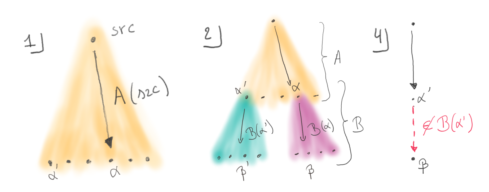
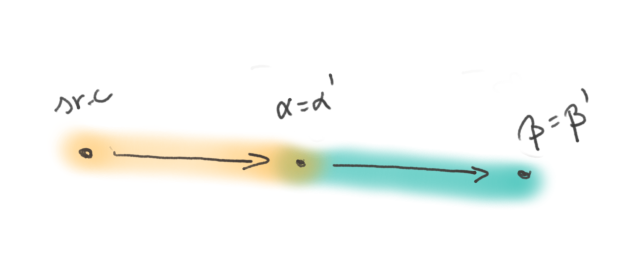

They have been around for far too long. It’s about time to tackle those pesky frankenbuilds. Coined in 2016 by Esfahani et al. the term describes “builds where outputs from different build jobs can combine in inconsistent ways due to cache re-use”.
Let’s start with an example scenario for the problem. Imagine a build systems that runs a benchmark of some program and then processes the results into a human friendly html summary. Both results get added to the cache, but the benchmark results get later evicted from the cache. On the next build, the cache miss forces a new execution from the cache, and uploads the new version to the now empty cache slot. All the cache entries contain a valid build output, but is left in an inconsistent state where the html summary corresponds to a benchmark that is not available anymore. When the builder downloads the cached html report, it ends up in an incorrect build state, where the report is not up-to-date with the benchmark, despite both having been generated correctly from the specification.
A frankenbuild is an inconsistent build state where an output β that was generated based on an intermediate output α is used together with a different version α’ of α due to cache substitution. This violates the necessary condition for the build to be correct, as the output β is not up-to-date with respect to its concrete input α’. The situation can happen in several ways, but only under some circumstances.
- A build output α needs some variability that escapes the vigilance of the build system.
- There also needs to be some other build output β that depends on α and exposes some of its variability.
- Then the cache needs to store under the same cache key all the versions of β, generated from any variation of α.
- And finally α’, a variation of α, needs to be generated and used wrongly in conjunction with the original β.

This last point needs clarification as it covers a range of situations. A build system that gets a cache miss for α will regenerate a new α’. But two builds running in parallel can race to fill the cache, and each get only one of their two outputs stored, taking α’ from one and β from the other. Situations involving several caches also hide traps, as the two caches may have been populated separately.
Frankenbuilds are real threats to build theoretical correctness, but chiefly they could end up in long hair-pulling sessions where before finding that the two involved inputs are incompatible. As would be the case when you debug an executable with similar but incompatible debug symbols. And the infrequency of these events makes them even more ominous, because these are not part of the mental model of the users facing the issue. Fortunately, there are many ways in which they can be eradicated, or mitigated.
Cache keys are the key
One way to look at this issue is that there is confusion on the validity of output β. Being generated from the successive tasks A and B is not sufficient to make it a correct build output for any output of task A. A provenance relation needs to be respected to ensure the consistency of the full build. The confusion arises when cache keys do not encode this provenance. This is the case with build systems like Buck and Nix who computes cache keys based on the transitive closure of build instructions, and not the bits of intermediate results. This shows one weakness of these indexing schemes.
We call such a keying scheme “intensional”, as the keys define what the content should be. For example, the content under key B(A(src)) is the result of applying task B on the output of task A, itself called with the said initial src sources.
cache["B(A(src))"] = β # but also β'
cache["A(src)"] = αWhen cache keys for β include a digest of the actual α output, it becomes impossible to retrieve the β based on a differing α’. We call this keying mechanism “extensional”, as it computes computes a digest of the content of all the inputs of a task, and also of the definition of the task. The cache keys record more closely what objects are, and less the process that builds them.
cache["B(α)"] = β
cache["B(α')"] = β'
cache["A(src)"] = αThis is in essence the reasoning described by the authors of CloudBuild: “To avoid this issue, BuildCloudincludes the input’s content bag identity when computing a target’s CacheKey.” Faced with the issue, they augmented their cache keys with digests of concrete inputs, effectively switching to another class of build systems.
This new keying mechanism takes into accounts the exact inputs used during the build comes with strong implications. The value of α must be know to be able to compute the key to lookup β. This forces to serialize the queries to the cache along a dependency path and thus forces a bottom-up realisation of the build tree (i.e. a top-down realisation on the production tree presented here).
This impact is mitigated during incremental builds because digests can be cached locally. In that case an incremental build requires only an incremental set of queries to the cache. And yet, some companies reported that these constant back and forth from the builder to the server where a bottleneck for large builds. They had to focus on cache and network speed, and had to use tricks like a special cache api that returns the digest of α without returning the full content, or dedicated build farm APIs that handle the full build graph to resolve the keys close to the cache server, reducing round-trips [@BuildGraph].
Intensional advantages, intentional advantages
As we have seen, extensional keying effectively prevents frankenbuilds, but comes with some constraints. Conversely, one may say that frankenbuilds arise due to the use of intensional keying schemes. And yet, Buck and Nix do rely on this flawed scheme, and there seems to be no traction in these projects to change in the foreseeable future. Let’s see why these projects use this keying scheme, and how they cope with its limitations. We will focus on Nix for it is the project we know best, but we can surmise that Buck follows approximately the same logic.
The reason why Nix uses intensional caches is that they allow to query for the presence of the final result directly, as the query can be constructed solely from the sources without any intermediate output. When a nix user wants to install a package, they are mostly interested in that package and the ones it depends upon at run time. They do not want to download the compiler that was used to compile it, nor the bootstrap compiler that was used to compile the compiler, and which are both build time dependencies of their packages.
Such incomplete builds where only a subset of the outputs are materialized are called shallow builds. They are not restricted to package managers like Nix. Materializing the whole set of intermediate outputs in a large codebase is often unnecessary and can waste a lot of local storage. When a developer edits a single file, they only need the intermediate products along the build branch that includes their file to reconstruct the final output.
Intensional keying make it faster to perform shallow builds as the final result can be queried immediately. On cache miss, it’s dependencies can be queried just as easily, until all the cached elements are found. The build can the proceed to materialize the missing outputs. This contrasts with key schemes, where the full closure of dependencies must be fetched (or at least their digest) in order to query the cache for the final binary.
As for frankenbuilds, they turn out to be theoretically possible, but not encountered in practice. There is only a single official cache for nix packages (i.e. nix build outputs). And only one build infrastructure is trusted to populate it. There is therefore no race to fill cache buckets. As for cache eviction, no package has ever been evicted (yet) from the central package cache of nix packages. With these two aspects, the main cache of packages is always consistent.
There remains scenarios where a use could end-up with frankenbuilds, for example when they build locally several packages not yet in the official cache (α′), and later download more packages (β) from the cache. With the advent of multiple caches [@Cachix], populated and evicted differently, the issue may see a revival of interest.
Provenance and the build paths
A recent initiative in the Nix world, the “content addressed store”, may eradicate frankenbuilds definitively. The changes encompass and are motivated by way more than frankenbuilds, but let’s explore how they address this particular issue.
In the process of designing CloudBuild, Esfahani et al. came with the concept of “provenance” relation. It captures the idea that a build can only be known to be correct if all the outputs are known to have been built from the other outputs that are materialized in the same build.
Instead of storing the provenance information in the cache keys, an alternative is to adjoin it to the cache values.
cache["B(A(src))"] = (β', from B(α'))
cache["A(src)"] = (α, from A(src))That way, downloaded entries can be checked for consistency with respect to the provenance relation. But it also means that the cache is less useful, as it may contain contradictory results. in this situation, a solution may be to store sets of cache entries under the same key.
cache["B(A(src))"] = { (β, from B(α), (β', from B(α')) }
cache["A(src)"] = { (α, from A(src)) }This solution is undesirable in practice, because all the entries must be downloaded and tested in sequence, and may still end up on a cache miss if none matches.
The content addressed store initiative works around this issue, by maintaining a content addressed cache of build outputs.
cache["B(A(src))"] = β'
cache["A(src)"] = α
cache["α"] = (α, from A(src))
cache["α"] = (α', from A(src))
cache["β"] = (β, from B(α))
cache["β"] = (β', from B(α'))'In this fashion, the provenance chain can be reconstructed from the cache, if all the entries are still present. Clients of the cache can thus avoid materializing frankenbuilds. This convoluted scheme is still vulnerable to other issues and inefficiencies, but not frankenbuilds.
The ultimate razor
Looking back at the necessary conditions for frankenbuilds to happen, we have seen that we can work around condition 4. by being careful not to let frankenbuilds happen in the cache, with centralised caches and restricted population strategies, or by tagging cache entries with provenance information. Condition 3. can be falsified by switching to another keying scheme, but that is a huge change in the build system design. Conditions 2. and 1. are also worth investigating.
Condition 2 states that there must be a second output that depends on the first, variable one, and that it must expose its variability. As build systems with no inter dependant tasks are way more limited than their inter dependant counterparts, it is not of great use. And while it is worth noting that there exists build system tasks that do not expose the variability in their dependencies, it is impossible to assert that for all the tasks of a general purpose build system.
Finally, condition 1 is quite interesting. It states that frankenbuilds cannot happen with tasks that exhibit no variability. While that property can again not be enforced nor verified for the tasks of a general purpose build system, hunting down variability reduces the chances of materializing frankenbuilds, and further reduces the chances of ever incurring its negative effects.
The property of a task with no variability s called reproducibility. A task is perfectly reproducible when all it’s executions yield the same output, bit for bit. Reproducibility cannot be guaranteed, but it can be tested, and examples of identical results in various conditions, as well as the absence of any variation in the long run can give some confidence that the task is indeed reproducible.

Reproducibility is the holy grail of build systems. It makes caching perfectly efficient, gives perfect confidence in binary outputs, and trivially reduces provenance tracking. It’s no wonder that binary package repositories strive to eradicate nondeterminism in their tasks. Linux distributions even started the reproducible build initiative [@RBI] to experience and good practice in reproducible package builds.
Conclusion
From the niche frankenbuild issue, we have explored a large variety of build systems designs, and in particular nontrivial cache keying schemes. We have seen the conditions to create a monstrous frankenbuild, and various solutions to work around them when one really wants to live in the world of intensional keying schemes. Finally, we had a quick look at reproducibility, the ever escaping ideal in the world of build systems. Reproducibility, to paraphrase Terry Pratchett, didn’t just kill the frankenbuild, it threw it in the river with lead weights tied to its feet.